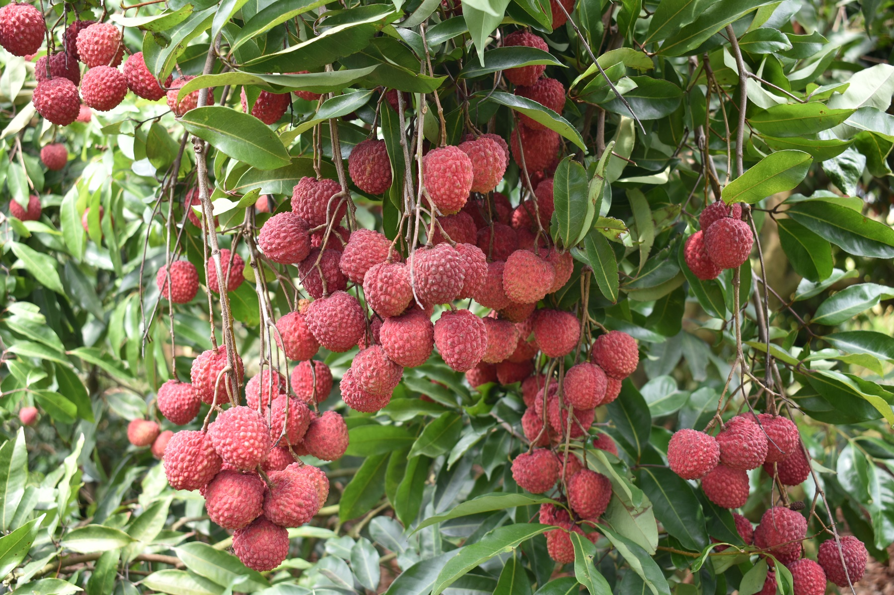
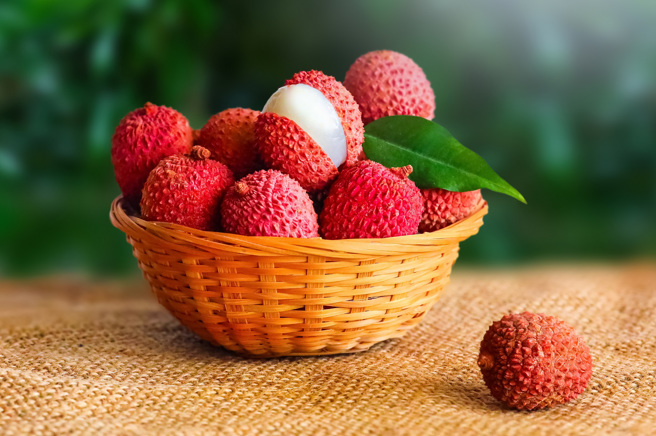

荔枝
紅色的盔甲下晶瑩剔透的果肉
荔枝是夏季的水果，主要生長於中國南部、台灣、越南、泰國等地區。荔枝果肉中含糖量高達20%，每一百毫升果汁中，維生素C含量最高可達70毫克，此外還含有蛋白質、脂肪、磷、鈣、鐵等成分。

荔枝營養4大功效
雖然荔枝吃多容易上火，但其實荔枝也含有豐富的營養，只要
適量攝取， 就能獲得以下4大功效好處。
維生素C：維生素C的含量是荔枝最具代表性的營養素，同樣重量而言荔枝維生素C的含量比蘋果高了整整20倍。
鉀：每100克的荔枝含有180毫克的鉀離子，適量攝取鉀有助於穩定血壓、防止心臟疾病、維持神經穩定和防範腎結石的功效。
對腦部有益：國外研究發現適量攝取荔枝有助於改善失眠、健忘和疲勞的問題。
養顏美容：荔枝能促進皮膚組織細胞的新陳代謝，可幫助改善色素沉澱和暗沉，且維生素C可增進膠原蛋白生成，使皮膚白皙有彈性。

荔枝的主要品種及特色
荔枝的主要品種分為三種，玉荷包、糯米糍和黑葉。玉荷包：肉質細緻，脆爽而清甜，微香稍澀。糯米糍：特點是肉厚，多汁，濃甜如蜜。黑葉：果實大、果核大，肉質軟滑細緻，香味濃郁。
資料來源: